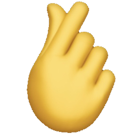

Nlsipess SU candidate
Radiant
Member
self-intro
學生會主席[孫嘉䂀]
自我介紹:
Halo大家好，我係5X班孫嘉曦，我今年會係Radiant擔任主席呢個位置
好榮幸今年可以參與學生會呢個組織！
今年係我第五年踏入呢間學校
並藉住今次呢個機會,我希望可以透過學生會呢個組織去聯繫學校同埋同學
另外我都好希望可以為同學服務！
我明白主席呢個職位不容易勝任，當初我亦都有質疑自己能否有足夠能力做好會長一職
但當我收到其餘八位成員及朋友的鼓勵及信任，我便知我可以，並要盡全力做好主席的責任
今年我哋Radiant將會為大家帶來創新嘅活動另外我哋嘅目標之一係改善大家嘅校園生活
所以我哋會為大家爭取學生一些福利及權益
最後！請大家支持！RADIANT！
外務副主席[冼倩怡]
自我介紹:
Hello大家好！我係今年學生會候選內閣 Radiant❤🔥嘅外務副主席冼倩怡🍒
今年好榮幸可以成為Radiant❤🔥嘅一份子,講起點解促使我去參加學生會
其實係源於幾届學生會盡心盡力服務同學嘅精神💪🏻☀️令我非常向往
希望自己都有機會去服務平中嘅同學
我認為呢件事係非常之具有意義嘅,因為我明白學生會嘅重要性
明白同學們其實需要沉入於學業中得到一些渠道去抒發自己嘅壓力🫂
學生會就係其中一個媒介☀️
為同學策劃有趣嘅活動,唔好比校園生活一味只有讀書、做功課,而係具有生動有趣嘅校園生活🌈🌟
因此呢個就係我參加學生會嘅原因。我希望可以成功當選，為平中同學出一分力❤🔥
疫情攞走咗我哋本來嘅校園生活,但請相信我哋Radiant❤🔥我哋會為大家度定好橋！
無論係舊時備受好評嘅活動,或者係令大家耳目一新嘅活動☀️
讓我哋平中嘅同學,即使係疫情期間都可以享受多姿多彩的校園生活
唔會因為受疫情嘅影響,喪失喺平中美好、令人回味嘅校園回憶⏳
我相信Radiant❤🔥定能竭盡所能❗做到最好！請大家多多支持Radiant❤🔥
內務副主席[莫鎧晴]
自我介紹:
大家好！我係Radiant嘅內務副主席5A班莫鎧晴Debby🤩
首先等我自我介紹一下，熟我嘅人都知道我好鍾意傻笑
甚至大家都會畀我感染到，所以我好想帶歡樂俾各位同學🙈🤍
另外我希望今次成功當選可以為平中嘅同學喺校園生涯入邊增添寶貴嘅回憶
而我係一個喺平中生活左四年嘅學生，我感受到一個學生會對學生來講係可以增添好多精彩嘅校園生活
所以我都想為平中嘅同學服務，令各位同學都可以過到多姿多彩嘅校園生活😍❤🔥
而身為內務副主席嘅我會盡最大嘅努力爭取一啲校內嘅福利俾大家
亦會為同學帶來創新嘅校園活動同埋各種嘅服務🔥！喺未來嘅日子希望大家多多支持Radiant❤🔥❤🔥
學術[蘇嫚瑤]
自我介紹:
大家好！wakakakaka我係5A班嘅蘇嫚瑤，叫我yoannah就得！😈🧚🏻
唔好睇我黑蚊蚊樣惡惡咁，但其實我好外向同埋好相處的
今年係我第二年參選學生會🥳🤩而我係擔任Radiant嘅學術一職🧞♀️
我希望我可以用過往嘅經歷去幫助更多嘅平中同學仔！🥰
過往喺平中相處嘅四年，見到每個學生會都好積極
每一次舉辦嘅活動都可以令同學對學校嘅歸屬感更強又可以拉近師生嘅關係🤩
見到佢哋咁落力，成日幻想第時自己都可以佢哋咁
我都好想參與一份！所以好感激我可以成為Radiant嘅學術一員
我希望我哋嘅學生會可以俾大家一個全新舒適嘅校園生活
喺良好嘅學習環境底下亦有一個愉快寶貴嘅校園生活
同時亦希望Radiant全員可以成為大家堅強嘅橋樑。努力服務大家！
最後！請大家支持！RADIANT❤️🔥！
你唔係唔支持呀嘛
活動[張申燁]
自我介紹:
大家好，我係2022至2023年度學生會候選內閣radiant張申燁我喺當中嘅職位係活動
radiant係由我同埋八位成員組成，每個人都有唔同性格。希望各位同學可以多多接納
身為活動呢個職位我會為同學準備好多唔同有趣嘅活動
令同學的中學生生涯更多趣味更有回憶。我同成員們會商討更加多前所未有嘅活動俾同學參與
希望同學可以為我哋radiant投下神聖嘅一票!
文書[袁洛為]
自我介紹:
Weeee 大家好 我係5X班袁洛為Lowell😜喺Radiant 擔當文書嘅角色
我係一個好外向好鍾意講嘢嘅人😚今年係第一年參選學生會
喺平中生活並且準備踏入中五， 我好感激今次有機會可以成為Radiant文書一職😆
我希望我哋學生會可以畀同學有一個全新校園生活😎 努力為大家服務！
最後希望同學可以為我哋Radiant投下神聖嘅一票❤🔥
福利[曾壁汶]
自我介紹:
大家好 我係5A班嘅曾璧汶🤍🤏🏻今年已經係我第二次參加學生會
經過上年嘅經歷，我更加清楚自己有咩需要改，我相信自己一定可以比以前做得更好
我喺Radiant入面係負責福利呢個職位
我希望嚟緊可以有機會為各位同學帶嚟更多適合你哋嘅福利比大家❤️
我希望可以透過我同另外8個成員既雙手為大家帶嚟以前未必體會到既校園生活
亦都會盡我哋所能去解決大家認為學校需要改善嘅問題
今年已經係我踏入平中嘅第五年
我想趁住自己最後一年可以參加活動嘅時間為大家出一分力
無論最後結果係點我哋都會出盡全力最後
希望大家可以望到我哋Radiant嘅用心而去投票比我哋Radiant❤️🔥
出版[梁家鏻]
自我介紹:
Aye👋🏽我係3D班嘅梁家鏻🧑🏻🦱係radiant🌞入面擔當出版嘅角色🎨
喺平中讀咗兩年,一直都係被照顧或被服務嘅對象👦🏻
準備踏入中三 好希望自己可以跳出舒適圈,成為服務大家😝靠獨特嘅畫畫風格為各位平中同學帶來更多樂趣嘅角色🤟🏻
雖然今次係我第一次成為平中學生會候選內閣成員之一,但我亦都會以最佳嘅表現同狀態為大家👽👽
希望今年可以為大家建立一個難忘嘅校園生活請大家投Radiant一票！🙌🏻
財政[佘丞鑫]
自我介紹:
大家好啦，咁我係佘丞鑫，擔任財政嘅職位，亦都會負責會內一啲在我能力範圍內技術上嘅支援
至於點解會想做學生會？就以我個人冇咁高大上嘅原因，一部分係個人利益上對自己有幫助
例如可以有處理較為大型嘅活動當中流程，預算控制嘅一啲經驗
或者可以有地方發展/發揮自己嘅專長或技能
另一部分就真係想為校內學生喺尼段校園時間，可以有一啲深刻回憶喺腦海中
希望個腦唔單單得DSE尼三嘅字母
就最後講多句，希望大家可以多多支持我哋radiant, thank you all of you guys !